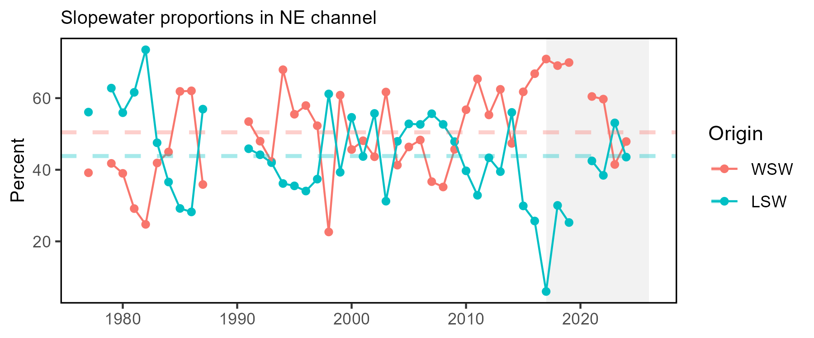

State of the Ecosystem
New England 2026
NEFMC CESC Update
March 27, 2026
Ecosystem reporting at different levels of organization
The SOE provides information at the ecosystem level

Ecosystem and Socioeconomic Profiles (ESPs) provide information at the stock level
Ecosystem and Socioeconomic Profiles support fisheries science and management by providing additional context that can help inform the development of the stock assessment model, as well as by communicating contextual information to fisheries managers.


2026 Report Structure
- Graphical summary
- Page 1 report card re: performance metrics
- Page 2 risk summary bullets
- Page 3 2025 snapshot
- Performance relative to management objectives
- What does the indicator say–up, down, stable?
- Why do we think it is changing: explore drivers
- Risks to meeting management objectives
- Same What and Why as Performance Section
- 2025 Highlights

State of the Ecosystem report scale and figures

A glossary of terms (2021 Memo 5), detailed technical methods documentation and indicator data are available online.
Key to figures

Long-term trends assessed only for 30+ years: more information
Short-term trends assessed for last 10 years of data OR a full time series <30 years
Orange line = significant increase
Purple line = significant decrease
No color line = not significant or < 30 years
Grey background = last 10 years
Georges Bank: Summary of Performance relative to management objectives


Gulf of Maine: Summary of Performance relative to management objectives


Summary of Risks to meeting fishery management objectives

New this year: Ocean Forecasts

2025 Highlights
Ecosystem observations
Cooler conditions in the Northeast persisted despite another record warm year globally.
Fishing observations
- Reports of record levels of white marlin, and higher abundance of billfish, sandlance, Illex squid and Atlantic mackerel than in recent years.
- Observations of some species (Atlantic mackerel, striped bass, red drum, bluefish, and other gamefish) showed shifting distributions and unpredictable timing.
- Good hook and line fishing near the wind turbines.
We welcome your observations! northeast.ecosystem.highlights@noaa.gov

Highlights Methods
Observations solicited from:
- SOE contributors
- NEFSC colleagues
- Academic colleagues
- Management partners
- Fishing industry
Observations included if:
- Record high or low observations
- Different from recent conditions
- Reported by multiple sources
- Affecting fishery operations
- Newsworthy
Not exhaustive list; Full impacts remain to be seen
Please send observations to: northeast.ecosystem.highlights@noaa.gov

Highlights: Cooler Northeast Shelf

Globally, 2025 was the third warmest year on record
BUT, nearly all NE shelf seasonal surface and bottom temperatures were similar to or cooler than the longer term average
The Cold Pool was well-developed and more similar to the long-term average in terms of extent and persistence
In 2024, relative contributions of Labrador Slope Water and Warm Slope Water more similar to the long-term averages

Highlights: Notable observations


Observations on timing, location, and abundance:
- Fishers reported delayed migration of black sea bass and the absence of bluefish off of Rhode Island
- Good year for billfish, with >23,000 white marlin caught and released
- Fishers reported low catch and cold stunned red drum and spotted sea trout
- Fishers reported higher abundance and wider distributions of Atlantic mackerel, Illex squid, and sandlance
- Good scallop survival in the Elephant Trunk region according to the scallop survey
- Arctic copepods in GOM observed in the EcoMon survey
THANK YOU! SOEs made possible by (at least) 88 contributors from 20+ institutions
Sydney Alhale (SEFSC)
Andrew Applegate (NEFMC)
Christina Asante
Heather Baertlein (NMFS Atlantic HMS Management Division)
Kimberly Bastille
Aaron Beaver (Anchor QEA)
Andy Beet
Brandon Beltz
Kristan Blackhart
Ruth Boettcher (Virginia Department of Game and Inland Fisheries)
Mandy Bromilow (NOAA Chesapeake Bay Office)
Joseph Caracappa
Samuel Chavez-Rosales
Baoshan Chen (Stony Brook University)
Zhuomin Chen (UConn)
Doug Christel (GARFO)
Patricia Clay
Lisa Colburn
Jennifer Cudney (NMFS Atlantic HMS Management Division)
Tobey Curtis (NMFS Atlantic HMS Management Division)
Kiley Dancy (MAFMC)
Cameron Day
Art Degaetano (Cornell U)
Geret DePiper (TAMUCC)
Bart DiFiore (MA DMF)
Gregory Ellis
Emily Farr (NMFS Office of Habitat Conservation)
Michael Fogarty
Paula Fratantoni
Kevin Friedland
Marjy Friedrichs (VIMS)
Sarah Gaichas (Hydra Scientific)
Ben Galuardi (GARFO)
Avijit Gangopadhyay (University of Massachusetts Dartmouth)
James Gartland (VIMS)
Lori Garzio (Rutgers University)
Glen Gawarkiewicz (WHOI)
Maxwell Grezlik
Laura Gruenburg (Stony Brook University)
Sean Hardison (UA Fairbanks)
Amanda Hart
Dvora Hart
James Hawkes
Cameron Hodgdon
Christopher Hunt (University of New Hampshire)
Cliff Hutt (NMFS Atlantic HMS Management Division)
Kimberly Hyde
Grace Jensen (WHOI)
Toni Kerns (ASMFC)
John Kocik
Steve Kress (National Audubon Society’s Seabird Restoration Program)
Young-Oh Kwon (Woods Hole Oceanographic Institution)
Scott Large
Gabe Larouche (Cornell U)
Daniel Linden
Robyn Linner (Maine Department of Marine Resources)
Andrew Lipsky
Sean Lucey (@ Orchard)
Don Lyons (National Audubon Society’s Seabird Restoration Program)
Kevin Madley
George Maynard
Chris Melrose
Anna Mercer
Shannon Meseck
Kiera Morrill
Ryan Morse
Ray Mroch (SEFSC)
Nicole Mucci
Brandon Muffley (MAFMC)
Robert Murphy
Kimberly Murray
David Moe Nelson (NCCOS)
Chris Orphanides
Stephanie Owen
Richard Pace
Debi Palka
Tom Parham (Maryland DNR)
Chris Patrick (VIMS)
CJ Pellerin (NOAA Chesapeake Bay Office)
Charles Perretti
Kristin Precoda
Julie Reichert-Nguyen (NOAA Chesapeake Bay Office)
Grace Roskar (NMFS Office of Habitat Conservation)
Andrew Ross (GFDL)
Jeffrey Runge (U Maine)
Grace Saba (Rutgers University)
Vincent Saba
Sarah Salois
Chris Schillaci (GARFO)
Amy Schueller (SEFSC)
Teresa Schwemmer (URI)
Tarsila Seara
Dave Secor (CBL)
Angela Silva
Adrienne Silver (WHOI)
Emily Slesinger
Laurel Smith
Linus Stoltz (Commercial Fisheries Research Foundation)
Talya tenBrink (GARFO)
Cameron Thompson (NERACOOS)
Abigail Tyrell
Rebecca Van Hoeck
Ron Vogel (University of Maryland/NESDIS Center for Satellite Applications and Research)
Bruce Vogt (NOAA Chesapeake Bay Office)
John Walden
Harvey Walsh
Joseph Warren
Sarah Weisberg (ICES)
Changhua Weng
Timothy White (Environmental Studies Program, BOEM)
Dave Wilcox (VIMS)
Sarah Wilkin (NMFS Office of Protected Resources)
Mark Wuenschel
Zhitao Yu
Qian Zhang (U Maryland)
NEFSC staff